기상기사 (2022-03-05 기출문제)
1과목: 기상관측법
1. 다음 중 증발이 가장 빠르게 일어나는 날은?
- 지표면에 접촉한 수증기량과 그 상방 기층의 수증기량이 차기가 크고 상, 하층 풍속의 차이가 5m/s인 맑은 날
- 지표면에 접촉한 수증기량과 그 상방 기층의 수증기량이 차기가 없고 상, 하층 풍속의 차이가 5m/s인 맑은 날
- 지표면에 접촉한 수증기량과 그 상방 기층의 수증기량이 차기가 크고 상, 하층 풍속의 차이가 5m/s인 흐린 날
- 지표면에 접촉한 수증기량과 그 상방 기층의 수증기량이 차기가 없고 상, 하층 풍속의 차이가 5m/s인 흐린 날
(정답률: 알수없음)

2. 지상기상전문의 운량표기(Nh)에서 짙은 안개 때문에 하늘이 전혀 보이지 않는 경우, 이 때의 운량 표시(8분법)는?
- 0
- 5
- 8
- 9
(정답률: 알수없음)
3. 종관기상관측에서 일반적으로 관측하고 있는 시정은?
- 특정 방향의 시정만을 관측한다.
- 방향별로 관측하여 평균치를 취한다.
- 모든 방향의 시정 중에서 최대의 것을 관측한다.
- 모든 방향의 시정 중에서 최소의 것을 관측한다.
(정답률: 알수없음)
4. 통풍건습계로 습도 관측 시 오차 발생의 주요 원인이 될 수 없는 항목은?
- 통풍시간
- 습구의 청결 상태
- 각 온도계의 설치 각도
- 각 온도계의 기차(index error)
(정답률: 알수없음)
5. 계류형 해양기상관측부이에 탑재되어 파고를 측정하는데 가장 적합한 센서는?
- 압력 센서
- 가속도 센서
- 초음파 센서
- 해수면 저항센서
(정답률: 알수없음)
6. 기상레이더 관측 변수에 관한 설명으로 틀린 것은?
- 펄스길이(PL) : 분해능
- 펄스폭(PQ) : 최대관측거리
- 신호대잡음비(SNR) : 수신감도
- 펄스반복주파수(PRF) : 유효관측거리
(정답률: 알수없음)
7. 우리나라에서 사용하고 있는 기상현상의 강도 판정 분류기준은?
- 0(약), 1(중), 2(강)의 3종류
- 0(약), 1(중), 2(강), 3(초강)의 4종류
- 1(보통), 2(강함)의 2종류
- 1(보통), 2(강함), 3(아주 강함)의 3종류
(정답률: 알수없음)
8. 구름입자의 구성물질에 대한 설명으로 가장 알맞은 것은?
- 수적(水滴)으로만 이루어짐
- 빙정(氷晶)으로만 이루어짐
- 수적 또는 빙정 또는 이들의 공존
- 응결핵, 빙정핵, 수적, 빙정, 빗방울, 눈 등이 공존할 수 있음
(정답률: 알수없음)
9. 기상위성에 탑재된 가시센서에서 탐사된 가시영상으로 알 수 있는 정보가 아닌 것은?
- 안개 탐지
- 운량 탐지
- 황사 탐지
- 운정 고도 탐지
(정답률: 알수없음)
10. 대기현상에 대한 설명 중 틀린 것은?
- 연무 - 육안으로는 보이지 않는 극히 작고 건조한 고체 입자가 대기 중에 떠다니는 현상으로, 공기는 유백색으로 탁해 보인다.
- 싸락눈 - 백색의 불투명한 얼음 입자의 강수로, 직경은 대략 2~5mm이다.
- 박무 - 극히 작은 수적이 떠 있는 현상으로, 수평시정이 1km 이하인 경우를 말한다.
- 이슬비 - 직경이 0.5mm 미만의 아주 작은 물입자의 다수가 하늘에서 내리는 현상이다.
(정답률: 알수없음)
11. 다음 기상관측용 측기 중 원리가 가장 비슷한 것으로 연결된 것은?
- 우량계 - 증발계
- 온도계 - 습도계
- 기압계 - 고도계
- 풍속계 - 풍향계
(정답률: 알수없음)
12. 수직측풍장비(wind profiler)에 대한 설명으로 틀린 것은?
- 도플러 변이를 이용한다.
- 라이다 원리와 비슷하다.
- 반사도 변화를 이용한다.
- 도플러레이더 원리와 비슷하다.
(정답률: 알수없음)
13. 대기 전기 현상을 나타내는 날씨 분류 기호가 아닌 것은?
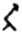
(정답률: 알수없음)
14. 다음 중 시정목표물을 선택하는데 가장 적절한 시각의 크기는?
- 0.5°이하
- 10°이상
- 0.5° ~ 5°
- 5° ~ 10°
(정답률: 알수없음)
15. 다음 기상위성영상 중에서 화산재나 황사의 연속적 감시에 주로 활용하는 영상은?
- 가시영상
- 적외영상
- 수증기영상
- 적외차분영상
(정답률: 알수없음)
16. 레이더영상 분석 시 고려해야 할 요소가 아닌 것은?
- 밝기온도
- 거리분해능
- 방위각분해능
- 지구곡률효과
(정답률: 알수없음)
17. 다음 중 일사관측 방법이 아닌 것은?
- 직달일사
- 지구복사
- 하늘복사
- 수평면일사
(정답률: 알수없음)
18. 열대폭풍(Tropical Storm)으로 분류되는 풍속의 기준으로 가장 적합한 것은?
- 중심부근의 최대풍속이 34 knots 미만
- 중심부근의 최대풍속이 34~47 knots
- 중심부근의 최대풍속이 48~64 knots
- 중심부근의 최대풍속이 64 knots 이상
(정답률: 알수없음)
19. 라디오존데(Radiosonde)로 관측되지 않는 것은?
- 기압
- 기온
- 습도
- 운량
(정답률: 알수없음)
20. 안개비를 나타내는 기호는?
(정답률: 알수없음)
2과목: 대기열역학
21. 대기 경계층에서 역전층이 잘 형성되는 층으로 짝지어진 것은?
- 지표층-전이층
- 지표층-혼합층
- 혼합층-구름층
- 에크만층-구름층
(정답률: 알수없음)
22. 지표면에서 증발을 억제하는 물리적 과정이 아닌 것은?
- 비가 내림
- 풍속의 증가
- 지표면의 냉각
- 공기의 수증기압 증가
(정답률: 알수없음)
23. 밀도가 1.2kg/m3으로, 지상의 기온과 기압이 15℃, 100hPa로 일정한 대기에서 1kg의 물체를 100m 높이는 데 필요한 에너지는? (단, 중력가속도는 10m/s2로 일정하다고 가정한다.)
- 1X103J
- 1.2X103J
- 1X105J
- 1.2X105J
(정답률: 알수없음)
24. 밀도가 1kg/m3인 균질대기에서 1000hPa-500hPa간의 평균 두께는? (단, 중력가속도는 10m/s2로 일정하다고 가정한다.)
- 5km
- 5.5km
- 6km
- 10km
(정답률: 알수없음)
25. 다음 ()안에 알맞은 용어는?
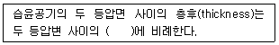
- 상대습도
- 수증기압
- 평균 가온도
- 평균 노점온도
(정답률: 알수없음)
26. 기온이 273K인 어떤 공기덩이를 압력을 일정하게 유지시키면서 그 체적을 2배로 팽창시켰을 때 기온은?
- 373 K
- 546 K
- 819 K
- 1092 K
(정답률: 알수없음)
27. 대기 중에서 공기가 팽창하여 주위에 대해서 일을 할 때 일의 변화량(dw)으로 알맞은 것은?
- dw > 0
- dw < 0
- dw = 0
- dw ≤ 0
(정답률: 알수없음)
28. 건조 단열감율, 습윤 간열감율, 실제 기온감율을 각각 γd, γs, γ라고 할 때 γd>γ>γs, 인 경우의 대기 상태는?
- 대류 불안정
- 잠재 불안정
- 절대 불안정
- 조건부 불안정
(정답률: 알수없음)
29. 기체의 정압비열의 크기에 대한 설명으로 옳은 것은?
- 풍속에 따라 다르다.
- 풍향에 따라 다르다.
- 절대온도에 따라 다르다.
- 기체의 종류에 따라 다르다.
(정답률: 알수없음)
30. 일반적으로 단열온도변화를 좌우하는 것은?
- 공기덩이의 가열
- 공기덩이의 수평적 이동
- 공기덩이의 팽창과 수축
- 공기덩이의 일중의 일사량 증가
(정답률: 알수없음)
31. 15℃에서 2.5kg의 공기 중에 수증기가 50g 들어있을 때 이 공기의 비습은?
- 15 g/kg
- 20 g/kg
- 25 g/kg
- 30 g/kg
(정답률: 알수없음)
32. 대기 중에서 관측값이 큰 값에서 작은 값 순으로 나열된 것은? (단, T는 기온, Tw는 습구온도, Td는 이슬점온도이다.)
- T > Tw > Td
- Td > T > Tw
- T > Td > Tw
- Td > Tw > T
(정답률: 알수없음)
33. 다음 선도 중 등온선이 곡선인 것은?
- Emagram
- Tephigram
- Stuve 선도
- Clapeyron 선도
(정답률: 알수없음)
34. 건조 공기의 질량 Ms 중에 수증기의 질량이 Mv인 습윤 공기의 평균 분자량
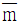
은? (단, M = Md + Mv, m = md + mv이고, md 와 mv는 각각 건조 공기와 수증기의 분자량이다.)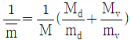
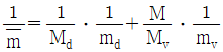
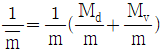
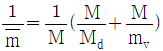
(정답률: 알수없음)
35. 다음 중 Skew T-log P 선도에서 등치선의 기울어진 방향을 왼쪽에서 오른쪽으로 차례대로 나열한 것은?
- 건조단열선, 포화단열선, 등포화혼합비선, 등온선
- 포화단열선, 건조단열선, 등포화혼합비선, 등온선
- 건조단열선, 포화단열선, 등온선, 등포화혼합비선
- 포화단열선, 건조단열선, 등온선, 등포화혼합비선
(정답률: 알수없음)
36. 대기열역학에서 Poisson의 식에 대한 설명이 맞는 것은?
- 이상기체의 상태 방정식을 대기에 적용시킨 것이다.
- 유체정역학 방정식의 변형으로부터 유도된다.
- 이상기체의 상태 방정식과 유체정역학 방정식으로부터 유도된다.
- 열역학 제1법칙과 이상기체의 상태 방정식으로부터 유도된다.
(정답률: 알수없음)
37. 2개의 원자로 이루어진 분자로 구성된 이상기체의 정압비열 Cp = 7/2 R 일 때 정적비열 Cv는? (단, R은 기체 상수이다.)
- 1/2 R
- 3/2 R
- 5/2 R
- 7/2 R
(정답률: 알수없음)
38. 대기 중의 에너지를 위치에너지, 내부에너지, 운동에너지로 나눌 때 내부에너지가 증가하면 위치에너지는?
- 증가한다.
- 없어진다.
- 변환한다.
- 점점 감소한다.
(정답률: 알수없음)
39. 어떤 온도계의 빙점이 -0.5℃, 비등점이 100.5℃를 가리킬 때 이 온도계로 20℃는 몇 ℃ 인가?
- 19.8℃
- 20.1℃
- 20.2℃
- 20.3℃
(정답률: 알수없음)
40. 혼합비(w)와 비습(q)의 관계를 옳게 나타낸 식은?
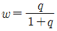
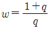
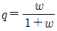
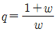
(정답률: 알수없음)
3과목: 대기운동학
41. 수십 m 규모의 작은 소용돌이 바람에 대한 설명으로 적절하지 않은 것은?
- 선형류의 한 종류이다.
- 주위보다 중심에서 기압이 더 낮다.
- 북반구에서 항상 반시계 방향으로 분다.
- 기압경도력이나 원심력에 비하여 전항력이 무시된다.
(정답률: 알수없음)
42. 어느 한 지점의 850hPa 면에서 남풍이 5m/s로 관측되고 700hPa면에서 남서풍이 7m/s로 관측되었다면 온도풍의 풍향은?
- 동풍
- 서풍
- 남풍
- 북풍
(정답률: 알수없음)
43. 공기덩이를 기온감율이 4℃C/km이고 평균기온이 300k인 안정된 대기속에서 연직으로 옳겼을 때 이 공기덩이는 일정한 주기를 가진 진동운동을 하게 된다. 이 진동운동의 주기는? (단, 건조단열 감율 Γd은 10℃/km이다.)
- 약 10분
- 약 9분
- 약 7.5분
- 약 5분
(정답률: 알수없음)
44. 지오포텐셜 고도(geopotential height)가 수평거리 1000km에 걸쳐 100m 증가한 경우 지균풍속(m/s)은? (단, f=10-4s-1이다.)
- 약 10
- 약 12
- 약 14
- 약 16
(정답률: 알수없음)
45. 마찰이 없는 경우 절대소용돌이도가 보존된다고 할 때 북상하는 공기덩이의 상태소용돌이도는?
- 일정하다.
- 감소한다.
- 증가한다.
- 증가와 감소를 되풀이한다.
(정답률: 알수없음)
46. 다음은 (x, y, z) 좌표계로 표현된 운동 방정식의 항들이다. 이들 중 곡률항(curvature trem)이 아닌 항은? (단, a는 지구평균반경, ∂는 위도, u, v, w는 동서, 남북, 연직방향의 속도 성분이다.)
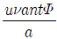
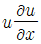
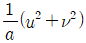
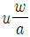
(정답률: 알수없음)
47. 기온이 250K인 등온대기의 1000hPa-500hPa의 지오포텐셜 총두께는? (단, 기체상수 287Jkg-1K-1, 중력가속도 9.8ms-2, ln2=0.93)
- 약 4.50 × 104ms-2
- 약 4.97 × 104m2s-2
- 약 5.3 × 104m
- 약 5.3 × 104m2s-2
(정답률: 알수없음)
48. 각속도가 Ω, 회전 중심축으로부터의 거리가 a인 원주에 대한 순환(circulation)은?
- Ωπa
- 2Ωπa
- Ωπa2
- 2Ωπa2
(정답률: 알수없음)
49. 질량 보존을 표현하는 식은?
- 연속 방정식
- 운동 방정식
- 정역학 방정식
- 에너지 방정식
(정답률: 알수없음)
50. 북위 45°에서 10m/s의 속도로 관성운동을 하는 유체의 관성반경은 대략 몇 km인가? (단, 코리올리 파라미터는 10-4/s이다.)
- 10
- 100
- 1000
- 5000
(정답률: 알수없음)
51. 다음 중 지면 근처에서 난류가 가장 약한 경우는?
- 바람이 강한 저녁
- 복사안개 낀 아침
- 여름철 맑은 날
- 바람 약하고 구름 없는 날 정오
(정답률: 알수없음)
52. 온퐁도에 관한 다음 설명 중 옳은 것은?
- 온도풍은 기압경도력에 의해 발생한다.
- 온도풍의 오른쪽에 온난이류가 발생한다.
- 등온선을 알면 온도풍의 방향을 알 수 있다.
- 온도풍은 상충과 하층의 온도차에 의해서 발생한다.
(정답률: 알수없음)
53. 북위 30°에서 두께가 10km인 유체가 동쪽으로 초속 5m로 이동하고 있다. 이 공기층이 높이 5km인 산맥을 넘는다고 가정할 때 산의 정상에서의 상대와도는? (단, 지구각속도 Ω는 7.29×10-5이다.)
- -3.65×10-5s-1
- -1.82×10-5s-1
- 1.82 × 10-5s-1
- 3.65 × 10-5s-1
(정답률: 알수없음)
54. 북위 30°에서 북쪽으로 일정하게 시속 120km로 날아가는 물체가 코리올리힘에 의해 5시간 후에 얻게 될 동서방향 속도의 변화량은? (단, 지구각속도는 7.29°10-5 reds-1이다.)
- 서쪽으로 시속 43.7km
- 동쪽으로 시속 43.7km
- 서쪽으로 초속 43.7km
- 동쪽으로 초속 43.7km
(정답률: 알수없음)
55. 로스비 수(Rossby number)가 가장 큰 것은?
- 관성류(Inertial flow)
- 경도풍(Gradient wind)
- 지균풍(Geostrophic wind)
- 선형풍(Cyclostrophic wind)
(정답률: 알수없음)
56. 남북 차등 가열과 가장 관련이 깊은 파는?
- 로스비파
- 관성중력파
- 천수중력파
- 경압불안정파
(정답률: 알수없음)
57. 로스비 수(Rossby number)에 대한 정의로 옳은 것은?
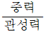
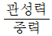
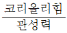
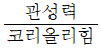
(정답률: 알수없음)
58. 경압대기에서 일어날 수 있는 것은?
- 제트류가 존재한다.
- 온도풍의 존재하지 않는다.
- 등압면에서 온도경도가 없다.
- 등압면이 등밀도면과 일치한다.
(정답률: 알수없음)
59. 열대교란인 경우 로스비 수의 규모(scale)는?
- 10-2
- 10-1
- 100
- 101
(정답률: 알수없음)
60. 등압면 일기도에서 위도 30°에서 지균풍이 20m/s인 경우 등압면의 기울기는? (단, 중력가속도는 10m/s2로 가정한다.)
- 약 1.5/1000
- 약 1.5/10000
- 약 3.0/1000
- 약 3.0/10000
(정답률: 알수없음)
4과목: 기후학
61. 온량지수(Warmth index)의 기준이 되는 온도는?
- 월평균 기온이 0℃ 이상
- 월평균 기온이 5℃ 이상
- 월평균 기온이 10℃ 이상
- 월평균 기온이 15℃ 이상
(정답률: 알수없음)
62. 우리나라 지방풍 중 마파람에 해당하는 풍계의 바람은?
- 서풍
- 동풍
- 남풍
- 북풍
(정답률: 알수없음)
63. 대륙성 열대기단의 발원지는?
- 인도양
- 그린랜드
- 사하라사막
- 캐나다북부
(정답률: 알수없음)
64. 쾨펜(Koppen)의 기후분류에서 C와 D기후에 대한 w의 기준은 여름 최습월의 강수량이 겨울철 최건월 강수량의 최소 몇 배 이상이어야 하는가?
- 3배
- 5배
- 8배
- 10배
(정답률: 알수없음)
65. 산맥이 국지기후에 주는 영향에 대한 설명 중 틀린 것은?
- 산맥과 해안선 사이의 지역은 지형적인 구름과 지형적 강수가 유발된다.
- 내륙에 동서로 놓인 산맥의 경우 극 쪽의 여름철 강수량이 증가하고 적도 쪽의 겨울철 강수량은 감소한다.
- 중위도에서 남북으로 놓여있는 해안선에 나란한 산맥의 경우 국지풍이 더 커지고 구름과 강수량이 증가한다.
- 내륙에 동서로 놓인 산맥의 경우 여름에는 남과 북이 모두 따뜻하나 겨울에는 극 쪽이 적도 쪽보다 더 추워져 기온차가 커진다.
(정답률: 알수없음)
66. 하이더그래프(hythergraph) 작성 시 이용되는 기후요소는?
- 기온, 기압
- 기온, 강수량
- 증발량, 기압
- 일사량, 강수량
(정답률: 알수없음)
67. 기후의 장기적 변화(long term change)의 천문학적 원인이 아닌 것은?
- 달의 광도변화
- 태양의 광도변화
- 지구축의 기울기 변화
- 지구궤도의 이심률 변화
(정답률: 알수없음)
68. 윈드칠(windchill)지수 계산에 사용되는 기상요소는?
- 기온과 풍속
- 기온과 상대습도
- 상대습도와 풍속
- 습구온도와 증발량
(정답률: 알수없음)
69. 지표면이 받는 실제 일사량이 가장 많은 곳은?
- 적도 부근
- 남북위 20° 부근
- 남북위 40° 부근
- 남북위 60° 부근
(정답률: 알수없음)
70. 해풍과 육풍에 관한 설명으로 틀린 것은?
- 하루 단위로 그 풍계가 바뀐다.
- 해풍은 낮에 해양에서 육지로 분다.
- 일반적으로 육풍이 해풍보다 더 강하다.
- 일사가 강한 저위도 지방에서는 고위도 지방보다 뚜렷하다.
(정답률: 알수없음)
71. 태양상수(solar constant)에 대한 설명으로 틀린 것은?
- 약 136W/m2값을 가진다.
- 산랑광과 반사광을 포함시킨다.
- 지구와 태양간의 평균거리를 취한다.
- 태양광선에 수직인 면이 받는 복사량이다.
(정답률: 알수없음)
72. 동기후인자(dynamical climatic factor)인 것은?
- 위도
- 지형
- 해발고도
- 고, 저기압
(정답률: 알수없음)
73. 쾨펜(Koppen)의 기후구분을 따를 때 우리나라가 해당되는 기후구로 가장 적합한 것은?
- A와 B
- B와 C
- C와 D
- A와 D
(정답률: 알수없음)
74. 강수량의 영향인자와 가장 거리가 먼 것은?
- 지형
- 기온의 일교차
- 대기층의 요란
- 기류의 수렴, 발산
(정답률: 알수없음)
75. 위도에 따라 열대, 온대, 한 대로 기후구분을 할 경우 이 구분과 분포가 가장 잘 일치하는 요소는?
- 기온
- 기압
- 바람
- 강수
(정답률: 알수없음)
76. 기후변화의 영향과 가장 거리가 먼 것은?
- 성층권의 냉각
- 적운계열 구름의 증가
- 전지구평균 해빙면적의 감소
- 화산폭발로 인한 에어로졸 증가
(정답률: 알수없음)
77. 푄(Fohn)과 보라(Bora)에 대한 설명으로 옳은 것은?
- 푄과 보라는 모두 농작물에 이익을 주는 바람이다.
- 푄에서는 기온이 내려감으로 체감은 상쾌하나, 보라에서는 기온이 급상승하여 나른하고 두통이 온다.
- 풍하측(Lee side)에서 푄과 보라의 습도는 모두 낮아지나, 기온은 푄이 높아지고 보라는 낮아진다.
- 푄은 여름을 중심으로 봄, 가을에 현저하며, 보라는 겨울을 중심으로 가을에서 봄에 걸쳐 현저하다.
(정답률: 알수없음)
78. 쾨펜(Koppen)의 기후분류 기호에 대한 내용으로 틀린 것은?
- Af : 열대우림기후
- BS : 사막기호
- Df : 냉대습윤기후
- ET : 툰드라기후
(정답률: 알수없음)
79. 열대 사바나 기후에 대한 설명 중 틀린 것은?
- 건기와 우기가 뚜렷하게 구별된다.
- 열대 사바나지역의 연평균 강수량은 열대 습윤기후지역보다 적다.
- 일반적으로 열대우림기후와 열대몬순 기후지역을 둘러싸고 있다.
- 연중 습도가 높아서 체감온도가 실제관측 기온보다 더 높게 느껴진다.
(정답률: 알수없음)
80. 제4빙기 동안에 유럽에서 나타났던 빙기의 명칭이 아닌 것은?
- 리스(Riss)
- 귄츠(Gunz)
- 민델(Mindel)
- 네브라스칸(Nebraskan)
(정답률: 알수없음)
5과목: 일기분석 및 예보론
81. 전선에 대한 설명으로 틀린 것은?
- 온난전선의 한기역에서 기압 하강구역이 나타난다.
- 한랭전선 통과 후, 연직방향으로 바람방향이 반전(Backing)한다.
- 전선면이 지나는 지역의 단열선도에서는 불안정층이 나타난다.
- 전선의 이동속도는 전선후면의 풍속의 직각성분에 비례한다.
(정답률: 알수없음)
82. 우리나라에 영향을 주는 고기압의 특성에 관한 설명으로 틀린 것은?
- 시베리아 고기압은 겨울철의 춥고 건조한 날씨를 만든다.
- 오호츠크해 고기압은 동해안 지방의 고온현상을 일으킨다.
- 북태평양 고기압은 고온다습하며, 여름철의 무더운 날씨를 만든다.
- 이동성 고기압의 영향을 받으면 봄에는 따뜻한 날씨, 가을에는 맑은 날씨가 된다.
(정답률: 알수없음)
83. 지상 일기도 기입 모델에서 다음 그림과 같은 경우에 해당되지 않는 상황은?
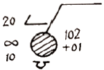
- 하층운이 있다.
- 비가 오고 있다.
- 하늘 상태는 흐림이다.
- 현재 기압이 1010.2hPa이다.
(정답률: 알수없음)
84. 순압대기(Barotropic Atmosphere)의 특징이 아닌 것은?
- 밀도는 기압만의 함수이다.
- 온도풍이 존재하지 않는다.
- 풍향은 고도에 따라 일정하다.
- 기압면과 온도면은 일치하지 않는다.
(정답률: 알수없음)
85. 중위도 서풍계에서 상층의 서풍 풍속이 일정할 때 장파(Rossby wave)의 이동에 대한 설명으로 적합한 것은?
- 파장이 긴 파가 더 빨리 진행한다.
- 파장과 진행 속도와는 관계가 없다.
- 파장이 짧은 파가 더 빨리 진행한다.
- 여름에는 파장이 긴 파가, 겨울에는 짧은 파가 더 빨리 진행한다.
(정답률: 알수없음)
86. 건조공기 1kg에 대한 공존하는 수증기 질량(g)의 비로 나타낸 것은?
- 비습
- 혼합비
- 상대습도
- 절대습도
(정답률: 알수없음)
87. 수증기가 전혀 없는 건조공기의 기온과 같은 것은?
- 노점온도
- 대류온도
- 상당온도
- 습구온도
(정답률: 알수없음)
88. 대기의 어떤 층이 시간의 경과함에 따라 높아지고 있다. 이와 관련되어 나타나지 않는 사항은?
- 온난이류가 있다.
- 층후가 증가하고 있다.
- 양의 와도가 증가하고 있다.
- 바람이 고도에 따라 순전(veering)하고 있다.
(정답률: 알수없음)
89. 의 일기 부호로 나타내는 일기 현상은?
- 약한 눈, 단속
- 약한 눈, 계속
- 강한 눈, 계속
- 보통 눈, 계속
(정답률: 알수없음)
90. 지상 일기도에서 등압선의 분석 간격은 일반적으로 몇 hPa을 쓰고 있는가?
- 1 hPa
- 2 hPa
- 3 hPa
- 4 hPa
(정답률: 알수없음)
91. 다음 그림에서 나타난 역전층의 종류는?
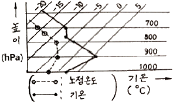
- 난류역전
- 복사역전
- 전선역전
- 침강역전
(정답률: 알수없음)
92. 층후가 같고 그 층의 평균기온과 기온경도가 일정할 때 위도에 따른 온도풍의 크기는?
- 어디서나 같다.
- 결정할 수 없다.
- 고위도에서 더 크다.
- 저위도에서 더 크다.
(정답률: 알수없음)
93. 층후도와 이류도를 이용한 지상기압계 발달에 대한 내용 중 틀린 것은?
- 등층후선 골(온도골)의 전방에서는 상승기류가 발생하여 지상 저기압이 발달한다.
- 분류형온도제트(diffluent thermal jet)는 층후 값이 감소하는 쪽에서 지상 저기압이 발달한다.
- 합류형온도골(confluent thermal trough)의 경우 고기압은 온도골 후방에서 온난 공기쪽으로 편향하여 발달한다.
- 합류형온도골(confluent thermal trough)의 경우 저기압은 온도골 전방에서 온난 공기쪽으로 편향하여 발달한다.
(정답률: 알수없음)
94. 제트류(jet stream)에 대한 설명 중 틀린 것은?
- 한랭전선과 무관하게 위치한다.
- 300hPa - 250hPa 고도에서 잘 나타난다.
- 풍속의 연직 및 수평시어(shear)가 크다.
- 북반구에서는 겨울철이 여름철보다 제트류의 강도가 크다.
(정답률: 알수없음)
95. 서울지방의 상공에서 700hPa면의 기울기가 200km 당 120gpm이던 것이 60gpm으로 되었다면 지균 풍속의 변화로서 맞는 것은?
- 변화가 없다.
- 1/2로 감소한다.
- 2배로 증가한다.
- 4배로 증가한다.
(정답률: 알수없음)
96. 8분수로 나타낸 운량과 그 기호의 연결이 옳지 않은 것은?
- 운량 : 1, 기호 :

- 운량 : 3, 기호 :

- 운량 : 5, 기호 :

- 운량 : 7, 기호 :

(정답률: 알수없음)
97. 다음과 밀접한 관련이 있는 것은?
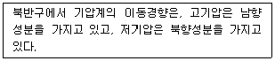
- 마찰력
- 원심력
- 전향력
- 기압경도력
(정답률: 알수없음)
98. 영동지방에 많은 눈이 오는 경우 우리나라의 기랍계 유형은?
- 서쪽에 고기압, 동쪽에 저기압
- 남쪽에 고기압, 북쪽에 저기압
- 북쪽에 고기압, 남쪽에 저기압
- 동쪽에 고기압, 서쪽에 저기압
(정답률: 알수없음)
99. 집중호우 예보에 해당되지 않는 조건은?
- 기압의 상승
- 대기성층의 불안정
- 하층 제트기류의 강화
- 전선 또는 중간규모의 저기압
(정답률: 알수없음)
100. 저기압 영역에서 대체로 좋지 않은 날씨가 나타나는 원인으로 가장 적합한 것은?
- 기류의 수렵
- 기층의 침강
- 밀도의 증가
- 강수의 증발
(정답률: 알수없음)